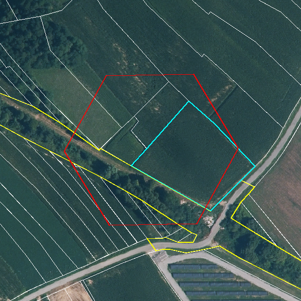
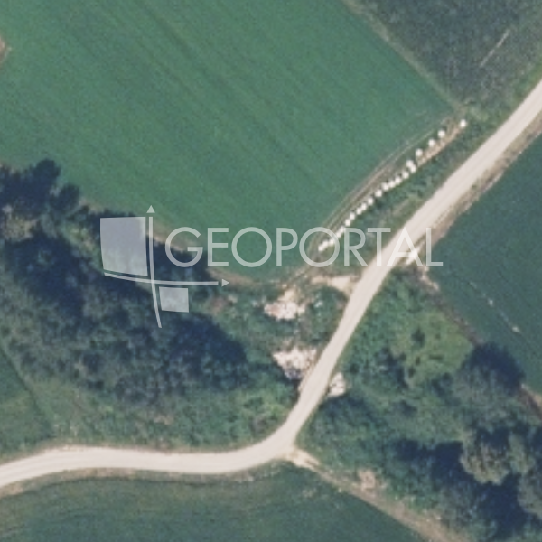
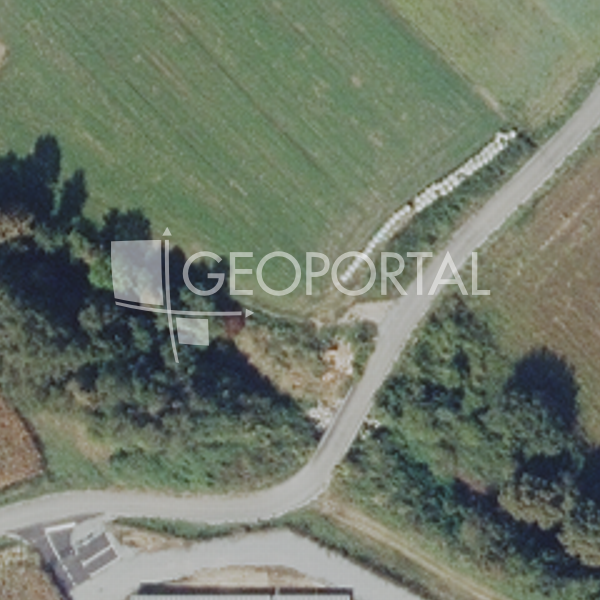
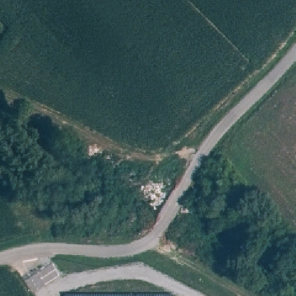
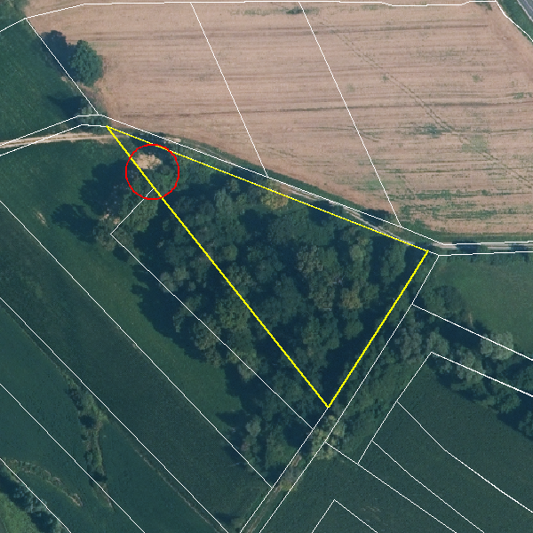
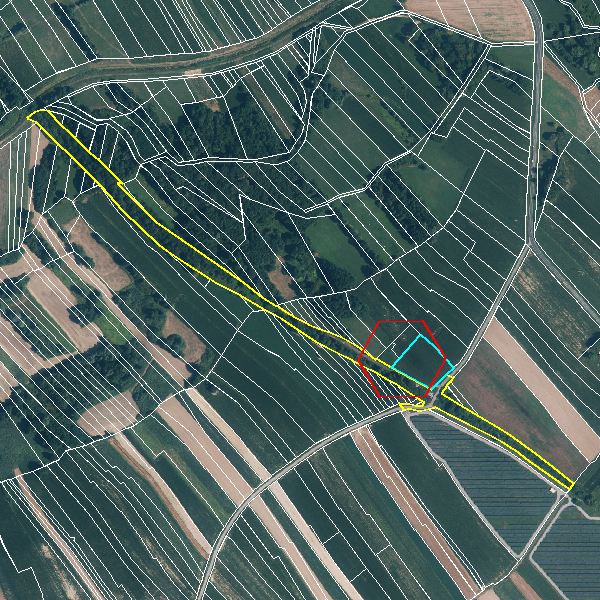
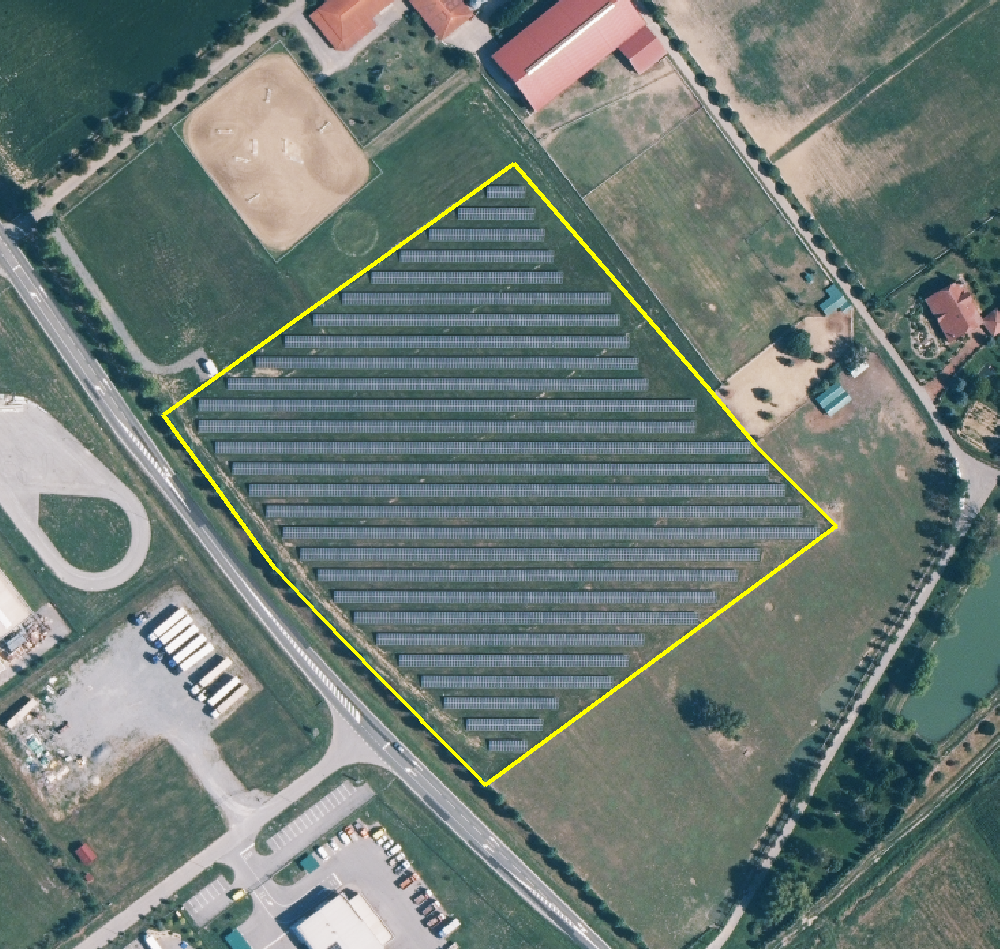
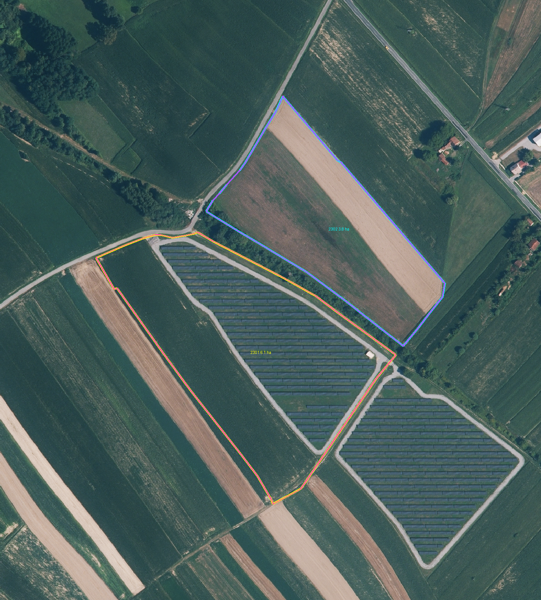
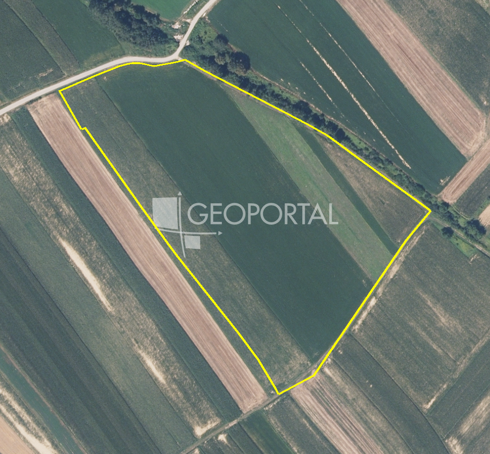

JU Zavod za prostorno uređenje BBŽ · KLASA 350-02/26-01/01 · URBROJ 2103-1-8-26-6 · 23.10.2026. · 8 točaka
Provjereno na GPKG-u 20261026_154711_184.gpkg i odredbama 184 (verzija 1. ponovne JR), DKP 301418 (2020), važećem PPUO (karte 1 i 3.b), DOF 2021–2026. Izradio Claude, 26.10.2026.
editor_config.js (sada privremeno pp_metadata.id NG7wapFKMpAAqFjb6EBxQD, koji može dati „Pristup nije dozvoljen“).| # | Primjedba Zavoda (kratko) | Vrsta | Opseg | Predloženi zahvat | Karta |
|---|---|---|---|---|---|
| 1.1 | Čl. 34/35 (antenski stupovi i prihvati) uskladiti s čl. 30.b/30.c PPŽ | tekst (odredbe) | 2 članka (2 udaljenosti + 1 iznimka) | dopuniti čl. 34 st. 3 i čl. 35 st. 1 (200 m / 100 m od škola i vrtića) | tablica |
| 1.2 | Divlje odlagalište 909/2 fali na karti; 878/8 nema smjernica (čl. 71 „Nije primjenjivo“) | geometrija + tekst + Obrazloženje | +1 poligon (342 m² ili 8.334 m²); 1 članak | ucrtati 909/2 kao ZP-3-2-3001, napisati čl. 71 (sanacija), ispraviti tablicu 3.1.5 | karta |
| 2.1 | Rezultati JR nisu ušli u Obrazloženje; 2 „neprihvaćene“ su provedene | Obrazloženje + Izvješće | 52 primjedbe; 16 proturječja u tablicama | ispraviti tablice, odlomci po poglavljima, novo poglavlje „Rezultati JR“, preklasificirati 2 točke | — |
| 2.1.1 | Kriteriji za šume nisu obrazloženi | Obrazloženje (+ geometrija ovisno o d) | Š1 → ne-šuma 32,14 ha; ne-Š1 → 1310 132,75 ha | odlomak s kriterijem + pravnom osnovom + ha; tablica 3.1.1 | karta |
| 2.1.2 | Netočna rečenica: akumulacija → ZP-2-3-3002 (zona ne postoji) | Obrazloženje (tekst) | 1 rečenica + 3 retka tablica | rečenicu zamijeniti, tablice „Brisano (Odluka o izradi)“ | — |
| 2.2.1 | Povezati grafiku s odredbama (dovoljno na poglavlje teme) | atribut (veze) | 6 KN_2_1 bez veze; pošta; 2× „SE Severin“ | skriptno povezati na poglavlje teme nakon uploada; uskladiti pošta/SE nazive | karta |
| 2.2.2 | ZP-2-1-2003 (potres VII°) nema na karti 3.2.1 | geometrija + veza | 1 poligon (2.594,73 ha ako cijela Općina) | ucrtati ZP-2-1-2003, povezati s čl. 64 st. 1–2; ispraviti Obrazloženje str. 48 | karta |
| 2.2.3 | P2 nije svuda prenesen u 3301 (npr. 757/4) | geometrija (KN_1_1) | 6,56 ha (+0,37 ha groblje); 81 poligon | 3399 + 3302 → 3301 (3,49 ha); 1310 po odluci (c) | karta |
„…potrebno je prihvatiti već danu primjedbu (pod rednim brojem 2.3.2.4.) da se odnosni članci odredbi za provedbu usklade s člancima 30.b i 30.c iz važećeg Prostornog plana … Bjelovarsko-bilogorske županije, kao što je bez pogovora učinjeno i u do sad izrađenim drugim planovima…“
Županijski plan (PPŽ) propisuje gdje se smiju graditi antenski stupovi i gdje se smiju postaviti antene na zgrade – između ostalog, na kojoj udaljenosti od škola i vrtića. U lipnju smo odbili te uvjete prepisati jer se bojimo da će HAKOM dati negativno mišljenje. Zavod sada kaže: zakon (čl. 61. st. 2. ZPU) traži da općinski plan bude usklađen sa županijskim, a mišljenje HAKOM-a tu obvezu ne može ukinuti. U Kapeli je ista primjedba prihvaćena (Izvješće o JR Kapela 24.07.2026.).
Napomena o brojevima: u odredbama verzije 184 članci o stupovima i prihvatima su čl. 34 i 35 (u ranijoj verziji 35 i 36).
Naš tekst je već gotovo doslovno prepisan iz PPŽ-a. Razlika su samo dvije udaljenosti (200 m za stupove, 100 m za prihvate od škola/vrtića) i iznimka za proizvodne/poslovne zone:
| PPŽ | Severin (odredbe 184) | Razlika |
|---|---|---|
| 30.a st. 1–2 (jedan stup za sve operatore; drugi stup; zamjenski niži stupovi) | čl. 34 st. 1–2 | istovjetno |
| 30.a st. 3 al. 1: „izvan GP naselja (osim u zonama proizvodne i poslovne namjene), te na minimalno 200 m od građevnih čestica i građevina predškolske i školske namjene“ | čl. 34 st. 3 al. 1: „izvan građevinskih područja naselja“ | nedostaje iznimka za proizvodne/poslovne zone i 200 m |
| 30.a st. 3 al. 2–3 + iznimka (troškovi/kvaliteta) | čl. 34 st. 3 al. 2–3 + st. 4 | istovjetno |
| 30.a st. 4 (oblikovanje, neasfaltirani putovi) | čl. 34 st. 5 | istovjetno |
| 30.b st. 1 al. 1–2 (prihvati na građevinama) | čl. 35 st. 1 al. 1–2 | istovjetno |
| 30.b st. 1 al. 3: „izvan područja odnosno na minimalno 100 m od građevnih čestica i građevina predškolske i školske namjene“ | — | nedostaje 100 m |
| 30.b iznimka, st. 2 | čl. 35 st. 2–3 | istovjetno |
| 30.c (uputa PPUO/G-u: utvrditi lokacije, smije razraditi kriterije) | — | ne prenosi se doslovno; to je uputa izrađivaču |
Tekst PPŽ: prijepis sa zaslona (zpubbz.hr, FlippingBook), 26.10.2026. – provjeriti prije citiranja. Kapelina verzija odredbi (373) koju imamo te udaljenosti nema – pitati Ivana je li ih u Kapeli naknadno dodao.
Odluka: Ivan – vidi (g) u bloku odluka. Zahvat je samo u tekstu odredbi, karte se ne diraju.
„…na kartografskom prikazu 3.b evidentirano „divlje“ odlagalište otpada na k.č.br. 909/2, k.o. Severin, koje se nalazi unutar obuhvata Plana… Navedena lokacija nije prikazana u grafičkom dijelu prijedloga Plana premda odlagalište nije sanirano. … [za 878/8] u odredbama za provedbu Plana nisu utvrđene odgovarajuće smjernice i mjere za njezinu sanaciju i zatvaranje.“
Dvije odvojene zamjerke:






Odluka: (b) u bloku odluka – oblik poligona 909/2; Općina potvrđuje stanje obje lokacije.
„…Od ukupno 17 primjedbi koje su u očitovanju izrađivača navedene kao neprihvaćene, utvrđeno je da su 2 primjedbe ipak prihvaćene… tražimo da se barem ona pojašnjenja koja je Zavod zatražio u prvoj javnoj raspravi, a koja su djelomično već sadržana u odgovorima izrađivača, uključe u obrazloženje Plana…“
Zavod kaže: u Izvješću ste mnogo toga objasnili i prihvatili, ali u Obrazloženju plana (dokument koji čita javnost) od toga nema ništa. Bez toga Zavod ne može razlikovati što je greška, a što namjerna odluka Općine. Usput nam poručuju da su dvije „neprihvaćene“ primjedbe zapravo provedene (pa je Izvješće netočno) i zamjeraju ton odgovora.
| Zavodove primjedbe iz JR (lipanj) | kom |
|---|---|
| ukupno | 52 |
| prihvaćeno | 29 |
| djelomično prihvaćeno | 6 |
| nije prihvaćeno | 17 |
| od „nije“ zapravo provedeno (po Zavodu) | 2 |
| „prihvaćeno 37“ u Zavodovu tekstu = 29 + 6 + 2 | 37 |
Brojke Zavoda su točne (provjereno po numeraciji Izvješća). Što Obrazloženje 261006 NE sadrži:
Kandidati za „2 provedene“: najvjerojatnije 2.1.3 (privatne šume) i 2.4.4 (pravila provedbe); ostali kandidati 2.2.7, 2.2.8, 2.4.3.
Zahvat: samo Obrazloženje i Izvješće (tekst). Detaljan popis 52 točke: analiza 26.10., poglavlje 3.
„…nisu jasno obrazloženi kriteriji na temelju kojih pojedine površine vidljive kao šuma nisu planirane kao šume, niti je potkrijepljena tvrdnja o određivanju šumskih površina u važećem Planu bez znanja i suglasnosti vlasnika.“
U važećem planu je dio zemljišta bio „šuma gospodarske namjene“ (Š1). U nacrtu smo šumu (1310) ucrtali po službenim evidencijama Hrvatskih šuma i Ministarstva, pa dio starog Š1 više nije šuma, a dio nove šume u starom planu nije bio Š1. U Izvješću smo to objasnili tvrdnjom da su vlasnici „bili oštećeni“. Zavod traži kriterij i dokument, a ne tvrdnju – i da se jasno razdvoji što je samo prijevod oznaka, a što stvarna promjena plana.
Zahvat: Obrazloženje; geometrija samo ako odluka (d) to traži.
„Brisana je potencijalna akumulacija i brana akumulacije Severin te je ta zona određena kao Rezervat za postplansku izgradnju, Područje ograničenja/posebni režim/zaštitni koridor ostalih građevina ZP-2-3-3002.“
U Obrazloženju piše da je zona bivše akumulacije postala „rezervat za postplansku izgradnju“ (ZP-2-3-3002). Ali te zone na karti nema – akumulacija je jednostavno brisana. Tekst opisuje nešto čega u planu nema, pa ga treba ispraviti.
Zahvat: samo Obrazloženje (tekst). Nema karte – zone nema u GPKG-u, i upravo je to bit primjedbe.
„Pritom nije nužno povezati svaki grafički element sa svakim člankom, nego osigurati da su svi elementi povezani s odredbama koje se na njih sadržajno odnose. … u nekim slučajevima je ispravnije sve elemente s jednog kartografskog prikaza povezati na poglavlje odredbi za provedbu koje se odnosi na tu temu…“
Svaki element na karti u ePlanovima treba „pokazivati“ na članak koji ga uređuje. U lipnju je Zavod tražio da se sve poveže sa svime; mi smo odbili. Sada Zavod popušta: dovoljno je da je svaki element vezan na svoje poglavlje (npr. sve sa karte elektroenergetike na poglavlje 2.3.2.), samo da nijedan nije bez veze ili vezan na članak druge teme. Brojevi točaka koje Zavod navodi (2.3.2.3, 2.3.2.6, 2.3.5.3, 2.3.5.4, 2.3.8) vjerojatno su krivo prepisani – opis odgovara našim odbijenim 2.3.2.7, 2.3.4.3, 2.3.5.5 i 2.3.6.3.
| sloj | poglavlje teme | featurea | vezano na svoju temu | na drugu temu | bez veze |
|---|---|---|---|---|---|
| KN_1_1 | 1.1. | 26 | 26 | 0 | 0 |
| KN_2_1 | 1.2. | 6 | 0 | 0 | 6 |
| KN_3_1 | 1.3.1. | 8 | 8 | 0 | 0 |
| KN_4_1 | 1.4. | 1 | 1 | 0 | 0 |
| IS_1_1 | 2.1.1. | 8 | 8 | 0 | 0 |
| IS_2_1 | 2.2.1. | 14 | 14 | 0 | 0 |
| IS_2_2 | 2.2.2. | 1 | 1 | 0 | 0 |
| IS_3_1 | 2.3.1. | 15 | 15 | 0 | 0 |
| IS_3_2 | 2.3.2. | 22 | 22 | 0 | 0 |
| IS_4_1 | 2.4.1. | 4 | 4 | 0 | 0 |
| IS_4_2 | 2.4.2. | 2 | 2 | 0 | 0 |
| ZP_1_2 | 3.1.2. | 7 | 7 | 0 | 0 |
| ZP_2_1 | 3.2.1. | 1 | 1 | 0 | 0 |
| ZP_2_3 | 3.2.3. | 1 | 1 | 0 | 0 |
| ZP_3_1 | 3.3.1. | 4 | 4 | 0 | 0 |
| ZP_3_2 | 3.3.2. | 1 | 1 | 0 | 0 |
Izvor: veze_sazetak.md (GPKG 184). Razriješenih veza: 106 na članak, 86 na stavak, 6 na točku.
Zahvat: atributi/veze u GPKG-u. Odluka (e) za nazive SE i 3907 bez para.



„U Obrazloženju na str. 48. je navedeno da je sloj seizmotektonski aktivno područje prenesen u kartografski prikaz 3.2.1. Tlo kao Područje najvećeg intenziteta potresa (VII° i više MCS) ZP-2-1-2003, ali takve oznake nema na navedenom kartografskom prikazu.“
U odredbama (čl. 64 st. 1) smo napisali da je cijela Općina u zoni VII. stupnja potresa, a u Obrazloženju da smo to ucrtali kao ZP-2-1-2003. Na karti toga nema. Zavod traži da se ucrta i poveže s člankom.
Dvije stvari se ovdje miješaju: intenzitet potresa (VII° MCS – vrijedi za površinu, po odredbi za cijelu Općinu) i seizmotektonski aktivno područje s karte 3.b važećeg plana (to je jedna crta – rasjed). Kod ZP-2-1-2003 se zove „Područje najvećeg intenziteta potresa (VII° i više MCS)“, dakle po smislu je to površina intenziteta.
Odluka: (a) u bloku odluka. ZP_2_1 je preklopni sloj – KN se ne dira.
„Iako je primjedba prihvaćena, promjena nije izvršena u potpunosti (npr. dio k.č.br. 757/4, k.o. Severin koji je u važećem Planu označen kao vrijedno obradivo tlo, u Prijedlogu Plana označen je kao Ostalo zemljište…“
U lipnju smo prihvatili da se „vrijedno obradivo tlo“ (P2) važećeg plana prenese kao KN-1-1-3301 Vrijedno zemljište. Zavod je našao česticu 757/4 gdje to nije napravljeno i kaže „npr.“ – dakle očekuje da provjerimo sve. Poljoprivredno tlo se kod transformacije ne smije „degradirati“ bez obrazloženja (čl. 58. st. 3. Pravilnika, čl. 29. Pravilnika o P1/P2).
Odluka: (c) u bloku odluka.
tnodes.py = 0 T-čvorova KN_1_1×KN_2_1, predvalidate.py; nakon čvorovanja bez čišćenja po sloju.editor_config.js → relink svih elemenata na poglavlja teme (t. 2.2.1).SEVERIN_PONOVNA_JR_DASHBOARD.html | ovaj pregled |
karta_12_odlagalista.html | t. 1.2 – 909/2, 912/1, 878/8+878/25+878/9, znak 3.b, prijedlog po DOF-u, postojeći ZP_3_2; DOF podloga |
karta_211_sume.html | t. 2.1.1 – Š1 važećeg izvan 1310 (po kodu), 1310 koji nije bio Š1, PISANIČKE ŠUME |
karta_221_se_posta.html | t. 2.2.1 – SE (IS_3_2 + KN 2907/3907), 3907 bez para, pošta |
karta_222_potres.html | t. 2.2.2 – prijedlog ZP-2-1-2003 = OB, crta 3.b, ZP-2-1-3005 |
karta_223_p2.html | t. 2.2.3 – 81 poligon P2 izvan 3301 po kodu, 757/4, granica GP |
karta_sve.html | scout – sve na jednoj karti |
karta_*.geojson | sidecar podaci karata (EPSG:4326) |
img/*.png | DOF isječci 909/2 i 878/8 |
editor.html + editor_config.js | preusmjeravanje „otvori u editoru“ – UUID se mijenja samo u editor_config.js |
build_dashboard.py | skripta koja sve generira: python -I -X utf8 build_dashboard.py |
Izvori brojki: _build/gpkg_check/geo2_report.md, geo2_results.json, veze_sazetak.md, provjere.txt; _build/geo_check_results.json; _build/ppz_cl_30abc.md; „261026 Analiza primjedbi Zavoda na 1. ponovnu JR (Claude).md“. Karte: PIPELINE/eplan_zavod/mapviz.py.